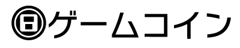
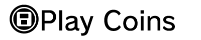
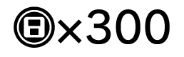
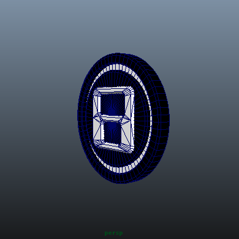
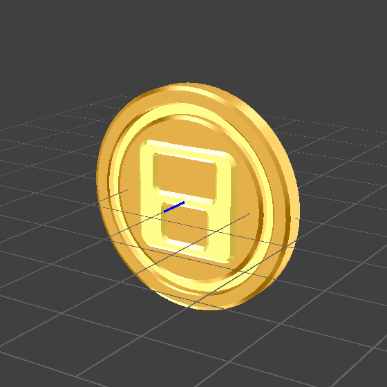

The CTR uses its built-in accelerometer to record the number of steps the user takes in a day while carrying the system. Play Coins are bonus points accumulated according to the number of steps, with one coin awarded for every 100 steps up to a maximum of ten per day, and up to a maximum total of 300 unspent coins saved at once. Saved Play Coins are points that can be used in common for all applications, and can be exchanged in applications for items or other features. See Play Coins in the 3DS Guidelines on how to use Play Coins. This document describes how to display Play Coins.
Note: The related graphics and other data are included under the playcoin directory in the CTR-SDK.
When displaying information about Play Coins in an application, you can either use the plain text "Play Coin" rendering, include a graphic with the text as in "[IMG] Play Coin," or use just the image and perhaps a number as in "[IMG]×300."
Figure 2-1 Examples of Play Coin Image and Text



Choose from the following three methods when displaying a Play Icon image.
.ai) and 3D model format (.obj, .cmdl). Image data files are located in the following directory in CTR-SDK. $CTR_SDK/resources/icon/PlayCoin
Illustrator Play Coin icons have two layers. One layer holds a Play Coin icon in color, and the other holds the icon in black and white.
Figure 3-1 Play Coin Icon in Illustrator Format
| Color | Black and White |
|---|---|
Nintendo provides Play Coin icon 3D model data in generic .bbj format, and in intermediate file .cmdl format for use with NintendoWare for CTR (NW4C). The generic 3D model Play Coin icon does not have any metallic textures applied. Edit this model as needed in the 3D application of your choice. The NW4C intermediate file Play Coin icon includes a metallic shine texture already applied using a three-stage texture combiner.
Figure 3-2 Play Coin Icon in 3D Model Format
| Generic 3D Model Format | NW4C Intermediate File Format |
|---|---|
 |
 |
The CTR system font includes an extended character glyph of a Play Icon. This glyph has Unicode code point U+E075. This glyph makes it easy to show a Play Coin icon in running text. When using the system font, note that you must also comply with any other applicable font guidelines.
You are welcome to alter the colors, textures, or gradations of an icon image, but contact Nintendo before making any major alterations to an icon image. Play Coins are generally shown in metallic colors, in accordance with the Play Coin icon shown on the HOME Menu. However, different backgrounds or surrounding colors can change the visual effect, so there is no specific standard color for the icons. When using the system font to embed an icon in running text, you are welcome to match the color of the Play Coin glyph with the color of the surrounding text. (Ex: A Play Coin glyph embedded in red text can itself be colored red.)
CONFIDENTIAL